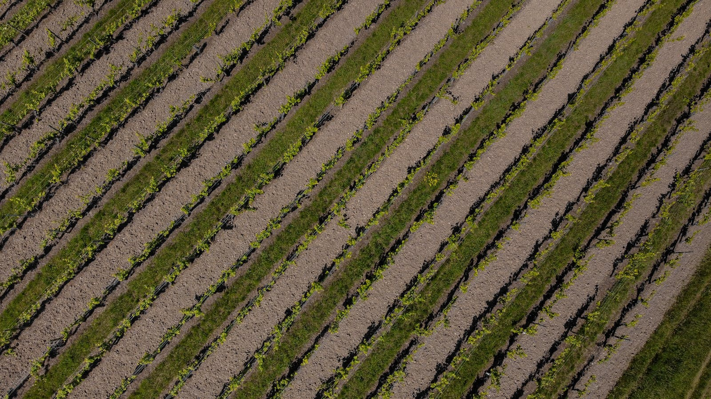

--:--
本草智链
农户端工作台
旗舰企业版
--
企业驾驶舱
实时策略同步首页入口
顶部 4 + 底部 5高频入口
核心功能
更多入口
直播与视频流
实时轮播实景媒体墙
四路实景视频功能星云
AI 智能中枢

--
AI CORE
AI入口
--
产区动态价格
真实采集样本
均价 --
最高 --
最低 --
价格走势图
折线趋势等待数据...
历史价格对比
2021-2026| 年份 | 均价(元/kg) | 峰值 | 低值 | 同比 |
|---|
品类热度
按真实价格计算成交量
动态变化等待数据...
峰值成交量 --
预售预测
基于产区动态| 各产区/市场 | 预测结果（元/公斤） |
|---|
产区动态
你提供的真实信息--
----
功能选择
全量可切换核心能力说明
点击查看流程链路
自动高亮服务动态
实时更新
PROJECT FEED
LIVE